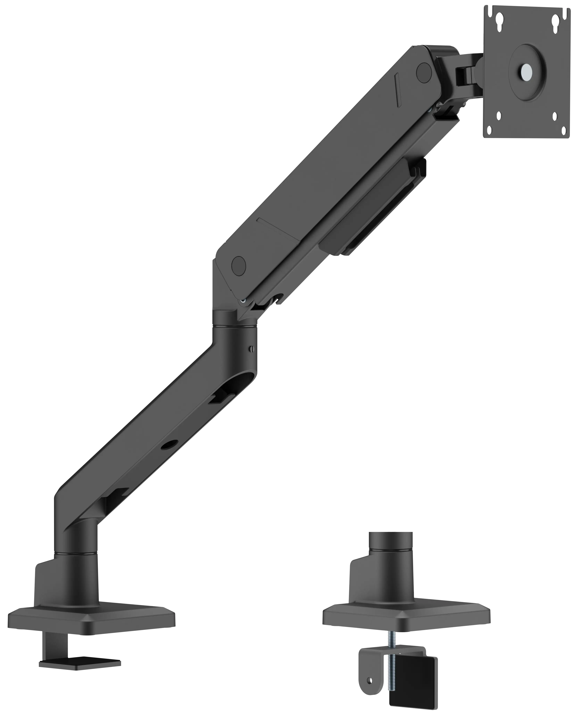
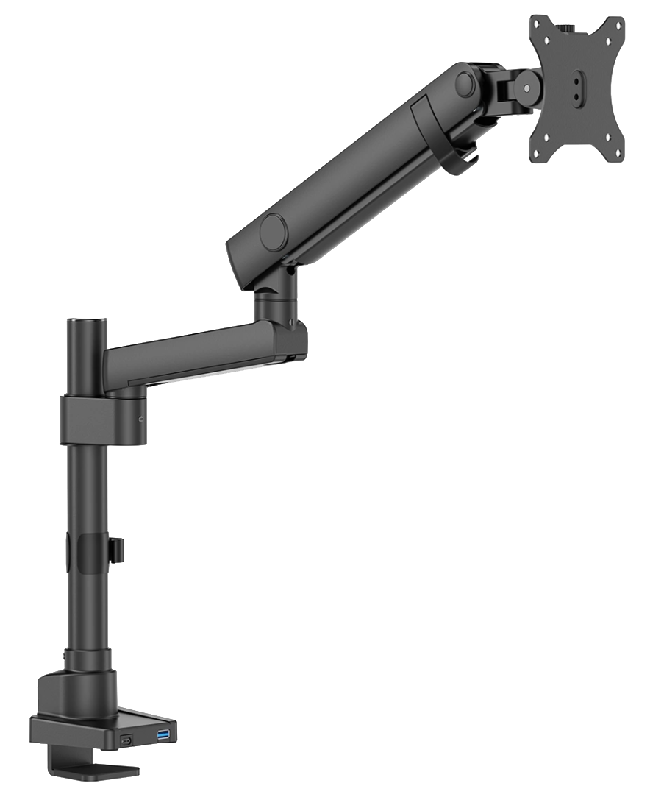

Skrivebord og teknologi
Skjermholdere

"Heavy-Duty" (LDT115) ↗
Mest for pengene til mitt bruk. Tåler skjermen min med god margin og har ca. 56 cm rekkevidde.
- 599 kr

SLIM V2 ↗
Slankere design og innebygde USB-porter. Ca. 51 cm rekkevidde, litt kortere enn LDT115.
- 799 kr

MaxMount Hercules ↗
USB-porter og omtrent samme rekkevidde som LDT115. Tåler tyngre skjermer, nyttig ved en senere oppgradering.
- 999 kr